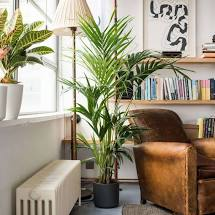

Welkom bij Office Plants, de webshop om je dichter bij de natuur te brengen tijdens je kantoorjob!
Onderwerp
Door de COVID-19 pandemie zijn veel mensen die voordien een kantoorjob hadden gedwongen om van
thuis uit te werken.
Je zit heel de dag voor je bureau, voor die grouwe witte muur of in het achterkamertje
van je huis.
Met Office Plants willen we jouw thuis-werkomgeving terug opvrolijken en de natuur terug
in huis brengen!
Product

Wij bieden een heel gamma aan planten aan die ideaal zijn voor bij je thuis.
Je kan kiezen uit verschillende soorten in allerlei formaten. Verder bieden wij mini ecosystemen
aan die helemaal geen onderhoud vergen.
Ideaal dus voor de personen die af en toe eens vergeten de planten te wateren!
Personalisering
Heb je een leuke plant gekozen maar vind je de bijhorende plantenpot niet mooi? Dan kan je bij ons zelf jou
ideale plantenpot samenstellen.
Zo heb je een plant die altijd perfect in jouw omgeving past!
Je kan niet alleen kiezen voor een bepaalde kleur van je pot, maar je kan ook een print of opdruk plaatsen.
Gebruik onze personalisering-tool om jou perfecte plant volledig te personaliseren.